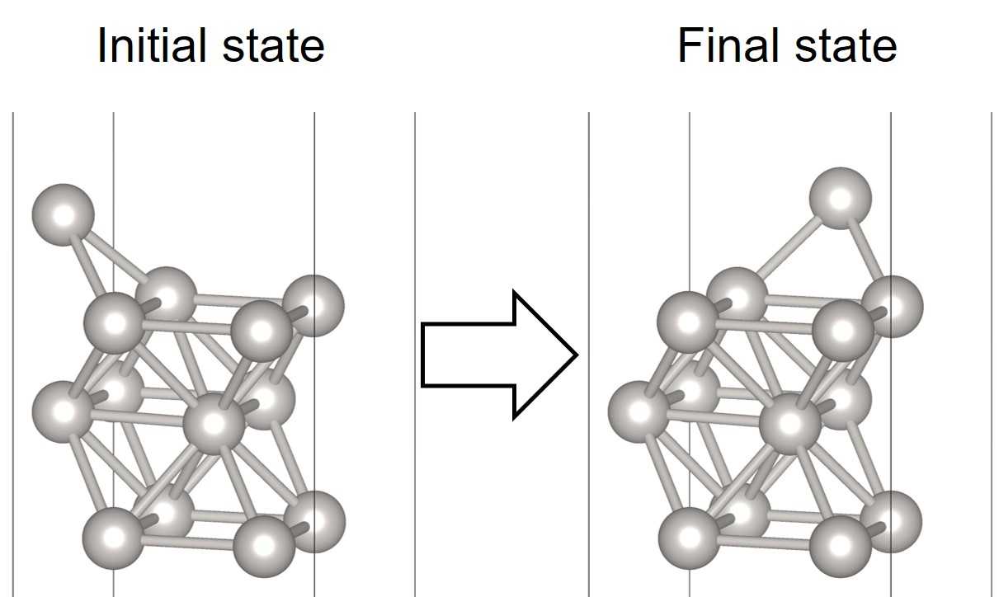
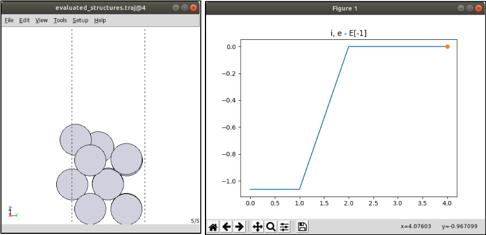

Workshop Tutorial : ML-NEB
This is a tutorial on "Nudged Elastic Band" calculations accerelerated by machine learning model (NEB-ML).
References:
[1] Collective jumps of a Pt ad atom on fcc-Pt (001)
[2] Low-Scaling Algorithm for Nudge Elastic Band Calculations Using a Surrogate Machine Learning Model
NEB-ML tutorial consists of the following contents:
** 1. Installation **
** 2. Classical NEB calculation **
** 3. ML based NEB calculation **
** 4. Comparison **
1. Installation
Requirements
- Python 3.6 or newer
- Atomic Simulation Environement (ASE) 3.17 or newer
- CatLearn 0.6.1 or newer
- ASE supproted DFT calculator (ex: VASP, SIESTA, GPAW)
- Transition State Tools for VASP (VTST-tools)
Optional
- Matplotlib 3.0.0 or newer (plotting)
The easiest way to install requirement is with:
$ pip install --user catlearn, ase, matplotlib
pip doesn't work, you can also get the source from a tar-file or from Git. In this case, you have to go to the homepages and follow their instruction.
1-1. ASE with VASP code
The following instruction makes it possible to use VASP as a calculator in ASE.
(See also VASP ASE interface instruction)
Set environment variable in your shell($HOME/.bashrc) configuration file:
$ export VASP_PP_PATH=(VASP pseudopotential PATH)
VASP_PP_PATH must include directories named potpaw(LDA XC), potpaw_GGA(PW91 XC) and potpaw_PBE(PBE XC).
1-2. Test calculation
The simple ASE with VASP example as below. (test_VaspASE.py)
from ase import Atoms, Atom
from ase.calculators.vasp import Vasp
a = [6.5, 6.5, 7.7]
d = 2.3608
NaCl = Atoms([Atom('Na', [0, 0, 0], magmom=1.928),
Atom('Cl', [0, 0, d], magmom=0.75)],
cell=a)
calc = Vasp(prec='Accurate',
xc='PBE',
lreal=False)
NaCl.set_calculator(calc)
print(NaCl.get_magnetic_moment())
slurm).
#!/bin/bash
#SBATCH -J TEST # job name
#SBATCH -o stdout.txt # output and error file name (%j expands to
#SBATCH -p X2 # name of cluster group
#SBATCH -N 1 # total number of nodesmpi tasks requested
#SBATCH -n 12 # total number of mpi tasks requested
export VASP_COMMAND="mpirun -np $SLURM_NTASKS $HOME/bin/vasp_5.4.1_GRP7_NORMAL_p13082016_VTST.x"
python test_VaspASE.py
1-3. Check the result
The OUTCAR and vasp.out display the normal VASP output and stdout.txt shows the output from the Python command.
print(NaCl.get_magnetic_moment())
stdout.txt is
0.1325833
2. Classical NEB calculation
The following NEB example [1] is about calculation of the energy barrier for the self-diffusion of a Pt-adatom on Pt(001). The most stable adsorption site of the adatom Pt@Pt(001) is the hollow(h) position.

Simple models of the diffusion of the adatom from h to the neighboring h site are provided below,
2-1. Set up VASP calculation
- POSCAR of the initial state (in directory 00)
Pt 1.0 5.620240 0.000000 0.000000 0.000000 5.620240 0.000000 0.000000 0.000000 16.860720 Pt 13 Cartesian 1.405060 1.405060 1.987035 4.215180 1.405060 1.987035 1.405060 4.215180 1.987035 4.215180 4.215180 1.987035 0.000000 0.000000 3.889464 0.000000 2.810120 3.894337 2.810120 0.000000 3.958172 2.810120 2.810120 3.889464 1.440922 1.369197 5.853553 4.179317 1.369197 5.853553 1.440922 4.251042 5.853553 4.179317 4.251042 5.853553 0.000000 2.810120 7.491487 -
POSCAR of the final state (in directory # of images+1)
In the present exercise, the required precision is reduced to a minimum.Pt 1.0 5.620240 0.000000 0.000000 0.000000 5.620240 0.000000 0.000000 0.000000 16.860720 Pt 13 Cartesian 1.405060 1.405060 1.987035 4.215180 1.405060 1.987035 1.405060 4.215180 1.987035 4.215180 4.215180 1.987035 0.000000 0.000000 3.889464 0.000000 2.810120 3.894337 2.810120 0.000000 3.958172 2.810120 2.810120 3.889464 2.810120 0.000000 7.491487 4.251042 1.440922 5.853553 1.369197 4.179317 5.853553 4.251042 4.179317 5.853553 1.369197 1.440922 5.853553 -
KPOINTS
K-Points 0 Gamma 3 3 1 0 0 0 -
INCAR
System: fcc Pt (001), 3layers ISTART = 0 EDIFF = 1e-6 # electronic convergence PREC = Normal IBRION = 1 # DIIS algorithm NSW = 20 EDIFFG = -0.01 # max forces: 0.1eV/AA ELMIN = 5 # at least 5 el. scf steps for each ionic st
Run a DFT calculation in order to get optimized structures in initial and final state.
2-2. Generate transition images
To generate intermediate geometries from the optimized structures (CONTCAR), the most easiest way is to use nebmake.pl in VTST-tools.
$ (vtstscript PATH)/nebmake.pl CONTCAR_initial CONTCAR_final 9
IMAGES in INCAR.
Now, add extra commands for NEB calculation in INCAR.
IMAGES = 9 # 9 intermediate geometries for the NEB
SPRING = -5 # spring constant
slurm, INCAR, KPOINTS, POTCAR must be in the upper folder after running the nebmake.pl. Run a NEB calculation in order to get energy barrier of transition state.
2-3. NEB result visualization
When the job is finished, you can use nebbarrier.pl with the VTST-tools to collect energy barriers in a brevity.
$ (vtstscript PATH)/nebbarrier.pl
neb.dat such as,
0 0.000000 0.000000 0.000000 0
1 0.519335 0.137702 -1.029721 1
2 1.037408 0.803577 -1.026118 2
3 1.554210 1.061091 0.006324 3
4 1.931107 1.015088 0.121788 4
5 2.312942 1.002032 -0.069935 5
6 2.706219 1.050405 -0.129819 6
7 3.115095 0.987022 0.520759 7
8 3.541559 0.566806 1.381246 8
9 3.985326 0.044625 0.581455 9
10 4.442108 -0.000021 0.000000 10
# image, distance, energy, force along the NEB (VASP-vtst ver. works), # image. The following python script (plot_neb.py) displays neb.dat using matplotlib.
import matplotlib.pyplot as plt
import matplotlib
from matplotlib.ticker import MaxNLocator
def file_len(filename):
with open(filename) as f:
for i, l in enumerate(f):
pass
return i+1
name = 'neb.dat'
Tlines = file_len('%s' % name)
data_all = []
f = open('%s' % name, 'r')
for i in range(Tlines):
line = f.readline()
words = line.split()
data_all.append(words)
f.close()
image = []; dist = []
energy = []; force = []
# Data gathering
for i in range(len(data_all)):
image.append(int(data_all[i][0]))
dist.append(float(data_all[i][1]))
energy.append(float(data_all[i][2]))
force.append(float(data_all[i][3]))
maxindex = energy.index(max(energy))
minindex = energy.index(min(energy))
# Visualization
fig, ax1 = plt.subplots(figsize=(8,7.5))
ax2 = ax1.twinx()
lines1 = ax1.plot(image, energy, color='black', label='Energy')
lines2 = ax2.plot(image, force, color='blue', label='Force')
ax1.xaxis.set_major_locator(MaxNLocator(integer=True))
ax1.set_xlabel('Reaction Coordinate', fontsize=15)
ax1.set_ylabel('Energy [eV]', fontsize=15)
ax2.set_ylabel('Force [eV / $\AA$]', fontsize=15, color='blue')
lines = lines1+lines2
labels = [l.get_label() for l in lines]
ax1.legend(lines, labels, loc=0, fontsize=12)
ax1.text(image[maxindex]+0.2, 0.6*energy[maxindex], "Barrier=%4.2f eV" % energy[maxindex], fontsize=15)
ax1.vlines(image[maxindex],energy[minindex],energy[maxindex],color='black',linestyles='--')
ax2.hlines(0,image[0], image[-1],color='blue',linestyles='--')
plt.tight_layout()
plt.savefig('neb_result.png', dpi=300, bbox_inches ="tight")
plt.show()

3. ML based NEB calculation
A surrogate Gaussian process regression (GPR) [2] atomistic model to greatly acclerate the rate of convergence of classical NEB calculations. The algorithm presented here eliminates any need for manipulating the number of images to obtain a converged result.
3-1. Set up ML-NEB calculation
To execute ML-NEB, catlearn and ASE are needed which we mentioned above. The following python script(neb-catlearn.py) gives a basic concept of how it works.
import sys, shutil, copy
from ase.io import read
from ase.optimize import BFGS
from ase.calculators.vasp import Vasp
from catlearn.optimize.mlneb import MLNEB
from ase.neb import NEBTools
from catlearn.optimize.tools import plotneb
### Read input files
struct_init = read('CONTCAR_initial')
struct_fin = read('CONTCAR_final')
### Set calculator
ase_calculator = Vasp(encut=400,
xc='PBE',
gga='PE',
istart = 0,
lwave=False,
lcharg=False,
kpts = (3, 3, 1),
ediffg=-0.01,
ediff=1e-6,
ibrion=1,
nsw=20,
ismear=1,
sigma=0.20,
algo='Normal',
prec='Normal'
)
# Optimize initial state:
struct_init.set_calculator(copy.deepcopy(ase_calculator))
qn = BFGS(struct_init, trajectory='initial.traj')
qn.run(fmax=0.01)
# Optimize final state:
struct_fin.set_calculator(copy.deepcopy(ase_calculator))
qn = BFGS(struct_fin, trajectory='final.traj')
qn.run(fmax=0.01)
# CatLearn NEB:
neb_catlearn = MLNEB(start='initial.traj', end='final.traj',
ase_calc=copy.deepcopy(ase_calculator),
n_images=11,
)
neb_catlearn.run(fmax=0.05, trajectory='ML-NEB.traj')
3-2. Check the ML-NEB results
After the job is finished, you need to check the output:
-
stdout.txt: CatLearn process standard output -
results_neb.csv& `interpolation.csv' : NEB original & interpolated results along to distance -
ML-NEB.traj: NEB original results along to number of images -
evaluated_structures.traj: predicted structures which VASP calculates in real
The .traj file can be read with ase gui
ase gui ML-NEB.traj

ase gui evaluated_structures.traj

3-3. ML-NEB result visualization
You can save the figure results in ase gui or use the following python script (plot_mlneb.py).
import matplotlib.pyplot as plt
import matplotlib
from matplotlib.ticker import MaxNLocator
def file_len(filename):
with open(filename) as f:
for i, l in enumerate(f):
pass
return i+1
name = 'results_neb.csv'
Tlines = file_len('%s' % name)
data_all = []
f = open('%s' % name, 'r')
for i in range(Tlines):
line = f.readline()
words = line.split()
data_all.append(words)
f.close()
data_all.pop(0)
image = [] ; dist = []
energy = []; uncert = []
for i in range(len(data_all)):
image.append(i)
# Data gathering
for i in range(len(data_all)):
dist.append(float(data_all[i][0]))
energy.append(float(data_all[i][1]))
uncert.append(float(data_all[i][2]))
maxindex = energy.index(max(energy))
minindex = energy.index(min(energy))
# Visualization
fig, ax1 = plt.subplots(figsize=(8,7.5))
ax2 = ax1.twinx()
lines1 = ax1.plot(image, energy, color='black', label='Energy')
lines2 = ax2.plot(image, uncert, color='blue', label='Uncertainty')
ax1.xaxis.set_major_locator(MaxNLocator(integer=True))
ax1.set_xlabel('Reaction Coordinate', fontsize=15)
ax1.set_ylabel('Energy [eV]', fontsize=15)
ax2.set_ylabel('Uncertainty [eV]', fontsize=15, color='blue')
lines = lines1+lines2
labels = [l.get_label() for l in lines]
ax1.legend(lines, labels, loc=0, fontsize=12)
ax1.text(image[maxindex]+0.2, 0.6*energy[maxindex], "Barrier=%4.2f eV" % energy[maxindex], fontsize=15)
ax1.vlines(image[maxindex],energy[minindex],energy[maxindex],color='black',linestyles='--')
plt.tight_layout()
plt.savefig('mlneb_result.png', dpi=300, bbox_inches ="tight")
plt.show()

4. Comparison
A great advantage of ML-NEB method comparing classical NEB is independent of the number of moving images composing the path.
Increase transition state images (from 11 to 38) on the previous example:

| Classical NEB | ML based NEB | |||
|---|---|---|---|---|
| Number of images | 11 / 38 | 11 / 38 | ||
| Number of evaluation | 11 / 38 | 5 / 5 |